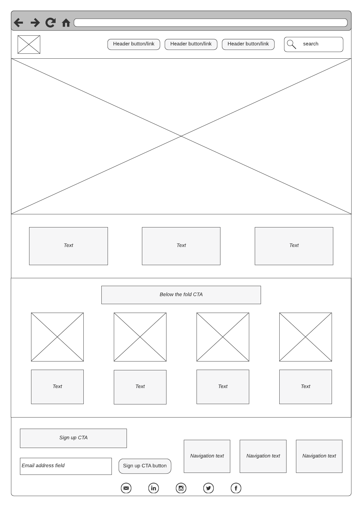

Site Name
São Paulo Chamber of Commerce - This name represents the business community of São Paulo, Brazil, and its economic initiatives.
Site Purpose
- To provide information about local businesses and investment opportunities in São Paulo.
- To promote networking events and resources for business growth in the region.
Scenarios
- What upcoming events promote business networking in São Paulo?
- Where can I find contact information for the chamber board members?
- What are the latest economic trends and opportunities in São Paulo?
Color Schema
Primary Colors:
- Dark Blue (#003366): Used for headers and navigation.
- Yellow (#FFD700): Used for highlights and accents.
- White (#FFFFFF): Used for background and text contrast.
Typography
- Open Sans: Used for body text.
- Poppins: Used for headings and emphasis.
Wireframe Sketches
Below are rough sketches for the mobile and desktop layouts:
